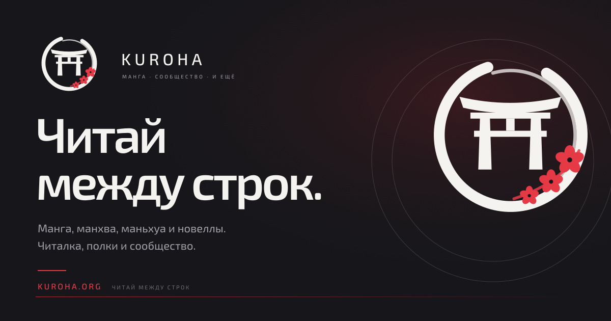

Знак
Тории вместо пера
Вход в историю. Двойное энсо удерживает движение, а три цветка сакуры дают знаку жизнь и цвет.
Kuroha · редизайн 3.0
Тории в двойном энсо. Красная сакура как единственный громкий акцент. Новый знак Kuroha открывает дверь в мангу, манхву, маньхуа и сообщество — без шума и лишних деталей.
Что нового
Прежний знак был пером — личным, бумажным, очень тихим. Новый тории делает бренд заметнее и сразу говорит о Японии, манге и сообществе. Остальное стало строже, чтобы знак звучал.
Знак
Вход в историю. Двойное энсо удерживает движение, а три цветка сакуры дают знаку жизнь и цвет.
Цвет
Глубокий графит, тёплая бумага и красный #E63946. Красный — только для действия, фокуса и сакуры.
Шрифт
Заголовки, интерфейс и текст читалки. Одна семья, три задачи, чёткий ритм и никакой декоративной пестроты.
Знак
Два круга — энсо — рисуются одним движением и остаются незамкнутыми. Это не «идеальный круг», а след руки. Внутри — тории, вход в историю. Красная ветка сакуры — единственный цветной элемент.
Логотип
В горизонтальном lockup — только знак и имя. Exo 2 500, широкий трекинг, тонкая линия между знаком и текстом. Дескриптор живёт отдельно: в OG и подписях.
Для печати и внешних сервисов используйте outlined-версии: текст переведён в кривые и не зависит от шрифта. Для сайта — HTML-lockup с живым Exo 2. Плашки logo-on-dark / logo-on-light лежат отдельно.
Цвет
Графит — основа, бумага — воздух, красный — нерв. Пропорции простые: 60 / 25 / 10 / 5. Красного должно быть мало, иначе он перестаёт быть событием.
Типографика
Exo 2 держит и заголовки, и интерфейс, и текст. Заголовки — крупные, плотные, с отрицательным трекингом. Метки — капсом, но редко. Читалка — 17–19 px, строка не длиннее 65 знаков.
«Не ищи меня среди имён. Я — в тишине между строк, в дожде на стекле и в свете, который ты оставил на столе.»
Пепел и луна · глава 12Интерфейс
Кнопка действия, активная глава, новая история, фокус. Всё остальное — графит, бумага и тонкие линии. Никаких градиентных кнопок и одинаковых SaaS-карточек.
Носители
Знак должен работать и в 16 px, и на большом экране. Для приложения — тёмная плашка, для соцсетей — аватар со знаком в размерах 1024, 512 и 400 px, для ссылок — OG-карточка с цитатой.

Голос
Kuroha не кричит и не заигрывает. Говорит на «ты», но без панибратства. Ошибка — это направление, а не извинение. Пустота — приглашение, а не приговор.
«Читай
между строк.»
Короткие фразы. Никаких восклицательных знаков и эмодзи в интерфейсе. Красный появляется там, где есть действие или событие.
Правила
Знак сильный, но хрупкий: ему нужны воздух, тёмная или бумажная подложка и один красный акцент. Не добавляйте свечения, рамки и вторую сакуру.
Охранное поле — 0.5 высоты знака со всех сторон. Ничего не должно касаться энсо.
Не меньше 24 px для знака и 120 px для lockup. В 16 px используйте favicon-версию.
#E63946 — единственный акцент. Не меняйте цвет сакуры, не добавляйте градиент на тории.